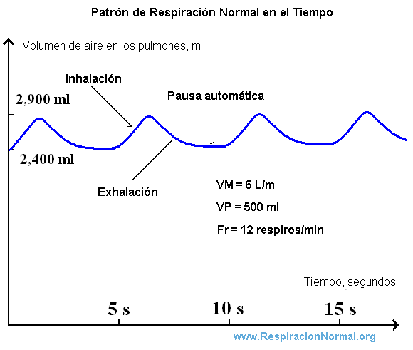

Algo que aparece muy frecuentemente en todas las clases es la pregunta ¿c√≥mo s√© que ahora tengo que inspirar? ü§î
Y no hablamos del momento adecuado para entrar a tempo mientras cantamos... Hablamos de esa "sensación" que aparece cada vez que terminamos de exhalar y que nos impulsa a volver a tomar aire.
En los gráficos siguientes podemos ver representada la respiración como una onda que sube y baja (o una ola que va y viene) a través del tiempo.
Esta onda puede tomar muchas formas (como se ve en el último) según lo que nos esté atravesando fisiológica y mentalmente.
Todas preguntas muy interesantes para hacerse en el espacio de trabajo vocal.
Si querés saber más a profundidad cómo funciona nuestro sistema respiratorio y cuál es su importancia para cantar, acá está todo explicado.
Si querés saber más a profundidad cómo funciona nuestro sistema respiratorio y cuál es su importancia para cantar, acá está todo explicado.Podés enviarme un whatsapp, mail o seguirme en redes sociales en los siguientes links: